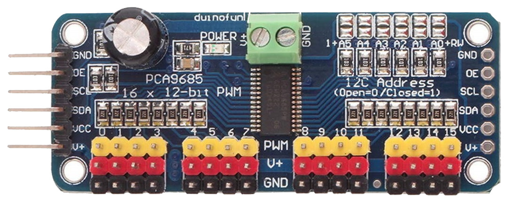
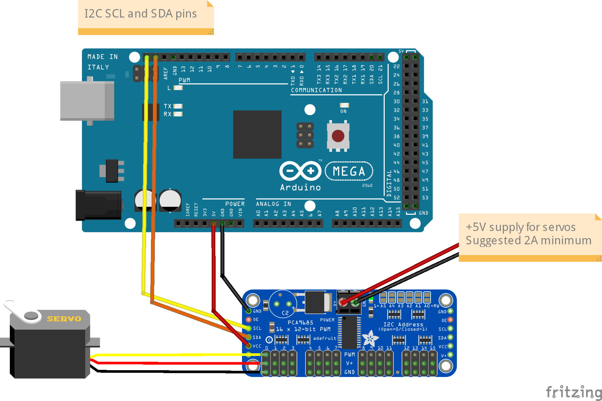
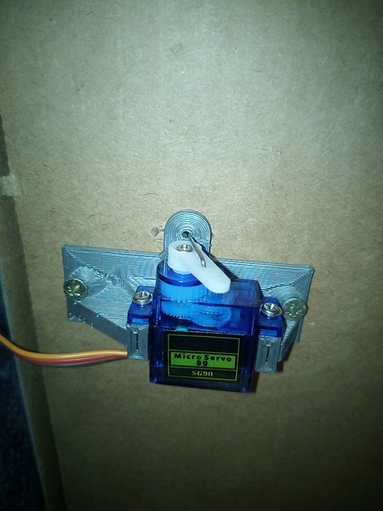
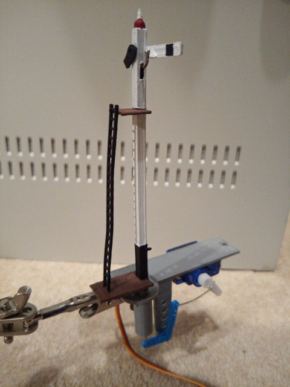
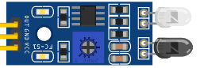

Stage 3 - Turnouts/Points, Accessories, Sensors & Blocks


What to expect to learn from stage 3
At the end of this stage, we expect you will have learnt the following:
How add Turnouts/Points
How to Add Sensors
How to add Blocks
Notes
Tuning servo positions
An important item to note when configuring servo based turnouts/points and signals is that the angles provided are going to be unique to your layout, and possibly even be unique to each particular turnout/point or signal, depending on how they are mounted and physically connected.
We provide some handy documentation on how to evaluate the correct angles on our Connecting a Servo Module page.
Turnout/point object IDs
Throughout this exercise, we will be defining turnout/point objects, and for consistency will be using IDs in the range of 100 to 199 for these.
This way, the various possible variations of each type of object will be defined with the same ID, meaning the same EX‑RAIL sequences will apply, no matter how the objects are defined.
For further information on IDs used in EX‑RAIL, refer to the Notes section of the EX‑RAIL reference page.
DCC addresses
Further to the above, for DCC controlled turnouts/points, these will commence at the linear DCC address 101, which starts at an address of 26, and a sub address of 0.
For help understanding linear vs. address/sub address formatting of DCC accessories, refer to the Stationary Decoder Address Table (xlsx Spreadsheet).
Note
When going through the various examples where we define DCC turnouts/points, you may notice that a turnout/point ID has a DCC linear address that is the same, or close to it. This is pure coincidence.
A turnout/point ID has no direct relationship to a DCC linear address, so turnout/point ID 100 has no direct relationship to DCC address 100.
Some people choose to ensure the turnout/point ID matches the DCC linear address when using DCC turnouts/points, but this is not necessary.
Sensor types
For simplicity, we will use infrared obstacle avoidance/proximity sensors throughout these exercises, which produce an active low output when activated.
If you use different sensors that simply provide an active low or high output, then there should be no change required to the various automation sequences provided, except using a negative “-” for the sensor pin ID if the sensors are active high instead of active low.
Note
When defining aliases for sensors, you cannot specify a negative number for these, and therefore to use an alias with an active high sensor, you need to add the negative in front of the alias name when referring to it in sequences and routes instead.
This is invalid:
ALIAS(SNS1, -22)
Instead, these use cases are valid:
ALIAS(SNS1, 22)
AT(-SNS1) // When activie high sensor 1 is triggered
IF(-SNS1) // If activie high sensor 1 is triggered
Adding a Turnout/Point
Adding the Hardware - Turnouts/points
To connect a servo to EX‑CommandStation, you first need to get a module, based on the PCA9685 chip.
{kind=link}
Note the pin connectors along the left side of the module - these are where you connect to the Arduino.
The 16 columns of three pins along the bottom of the module are where you connect the servos. The pins are arranged so that you can just plug a servo connector directly onto them, but be sure that the wire colours match the colours of the pins, i.e. yellow to yellow, red to red and black to black.
The servo module itself is powered from the Arduino, but the servos themselves contain motors that consume more current than the Arduino is able to supply, and so a separate 5V supply is required for the servos. This is connected to the green terminal block at the top of the module, with terminals labelled V+ and GND. The V+ terminal is connected to 5V and the GND to the 0V (ground) wire of the supply.
Connections to the Arduino are made with four jumper wires (+5V power and GND, and SCL and SDA), as shown on the following diagram:
{kind=link}
In EX‑CommandStation, the drivers for the PCA9685 module is already installed, and made available to for use as pin numbers 100-115. A servo is shown in the diagram, connected to the first set of pins on the module. This will be accessed using pin number 100.
Once you’ve made all of the connections, apply power to the Arduino.
Then, in the Serial Monitor, enter the command <D SERVO 100 450>. The servo should move, as long as it isn’t (by some fluke) already in that position.
Enter <D SERVO 100 110> and this time it should definitely move. For the last parameter (servo position) you can use any value between about 105 and 490.
Try <D SERVO 100 450 3> and the servo should move slowly back.
You can use the servo to control turnouts, semaphore signals, engine shed doors, and other layout components, to make your layout more dynamic and exciting. In the picture below, you can see a servo mounted below the baseboard with a piece of wire passing through a slot cut in the baseboard, to operate a turnout.
{kind=link}
And in the next picture you can see a servo that operates a semaphore signal. The signal, and its servo mounting bracket, were 3d-printed on a Creality Ender-3 printer.
{kind=link}
Configure the software - myAutomation.h - Turnouts/points
The myAutomation.h file needs to be altered so that the EX‑CommandStation knows about each Turnout/Point.
EX-RAIL supports three methods of controlling servos:
Turnouts via the SERVO_TURNOUT directive
Signals via the SERVO_SIGNAL directive
Animations via the SERVO or SERVO2 directives
The SERVO_TURNOUT directive defines a servo based turnout in EX-RAIL, which will appear in wiThrottle Protocol apps, Engine Driver, and JMRI in addition to being defined as a turnout within the CommandStation.
As per the EX‑RAIL reference, turnouts are defined with the following syntax:
SERVO_TURNOUT(id, pin, active_angle, inactive_angle, profile [, "description"])
The valid parameters are:
id = Unique ID within the CommandStation (note these are shared across turnouts, sensors, and outputs).
pin = The ID of the pin the servo is connected to, which would typically be the VPin ID of the PCA9685 controller board.
active_angle = The angle to which the servo will move when the turnout is thrown (refer below for further detailed information).
inactive_angle = The angle to which the servo will move when the turnout is closed (refer below for further detailed information).
profile = There are five profiles to choose from that determine the speed at which a turnout will move: Instant, Fast, Medium, Slow, and Bounce (note we don’t recommend Bounce for a turnout definition).
description = A human-friendly description of the turnout that will appear in WiThrottle apps and Engine Driver. Note that this must be enclosed in quotes “”.
An example definition for a servo connected to the second control pins of the first PCA9685 connected to the CommandStation, using the slow profile for prototypical operation:
SERVO_TURNOUT(200, 101, 450, 110, Slow, "Example slow turnout definition")
Adding a Sensor
IR sensors typically require three connections: 5V (or VCC), Ground, and output (OUT or S).
{kind=link}
To add a sensor, simply connect VCC to 5V, GND to ground, and OUT (or S) to an available digital I/O pin on your EX‑CommandStation. Typically D22 through to D49 are available for use.
If you are using I/O expander modules, then connect OUT (or S) to an available pin on the appropriate module, and you will need to reference the sensor by that vpin.
Note that some users prefer to desolder one or both LEDs and mount them on wire with one on each side of the track to modify the sensor to become a broken beam type. In this scenario, the sensor will become active high.
Configure the software - myAutomation.h - Sensors
You don’t actually require anything special to be configured in advance of using them in an automation.
Use in automation as AT(DpinNo) or AT(-DpinNo)
Adding a Block
Blocks in EX-RAIL are a virtual concept only, and they do not relate in any way to the concept of block occupancy detection.
A block is represented by an ID from 0 to 255 and is used to logically reserve a section of track in automation sequences to ensure only one train can enter a block at any given time to avoid collisions.
There are two keywords for using blocks: RESERVE(id) and FREE(id)
Configure the software - myAutomation.h - Blocks
You don’t actually require anything to be configured when using blocks in a sequence.
Simply attempt to reserve a block with RESERVE(id), and when the train has exited the block, free it again with FREE(id).